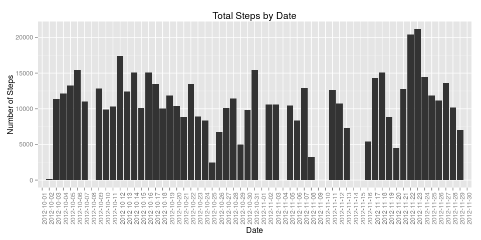
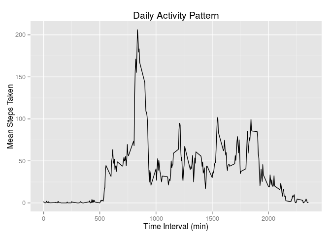

Data Science, Reproducible Research, Peer Assessment 1
Matt Frichtl
04/14/2015
library(ggplot2)
library(dplyr)##
## Attaching package: 'dplyr'
##
## The following object is masked from 'package:stats':
##
## filter
##
## The following objects are masked from 'package:base':
##
## intersect, setdiff, setequal, uniondata <- data.frame(read.csv("activity.csv", header = TRUE))1. Steps per Day
Calculate the total number of steps each day:
daily_steps <- data %>%
group_by(date) %>%
summarise(steps = sum(steps))ggplot(data = daily_steps, aes(x = date, y = steps)) +
geom_bar(stat = "identity") +
labs(x = "Date", y = "Number of Steps", title = "Total Steps by Date") +
theme(axis.text.x = element_text(angle = 90))
mean_steps <- mean(daily_steps$steps, na.rm = TRUE)
sd_steps <- sd(daily_steps$steps, na.rm = TRUE)
summary(daily_steps)## date steps
## 2012-10-01: 1 Min. : 41
## 2012-10-02: 1 1st Qu.: 8841
## 2012-10-03: 1 Median :10765
## 2012-10-04: 1 Mean :10766
## 2012-10-05: 1 3rd Qu.:13294
## 2012-10-06: 1 Max. :21194
## (Other) :55 NA's :8The mean number of steps taken daily is: 1.076618910^{4}
The standard deviation of the number of steps taken daily is: 4269.1804927
2. Average Daily Activity Pattern
mean_interval <- data %>%
group_by(interval) %>%
summarise(steps = mean(steps, na.rm = TRUE))
ggplot(data = mean_interval, aes(x = interval, y = steps)) +
geom_line() +
labs(x = "Time Interval (min)", y = "Mean Steps Taken",
title = "Daily Activity Pattern")
max_steps = max(mean_interval$steps)
max_interval <- filter(mean_interval, steps == max_steps)On average, the time interval in which the most steps are taken occurs at 835 minutes.
3. Inputing Missing Values
The function below replaces any missing values in steps with the mean value for that interval.
check_and_replace <- function(entry, means = mean_interval) {
if (is.na(entry$steps) == TRUE) {
entry$steps = filter(mean_interval, interval == entry$interval)$steps
}
return(entry)
}
data_replaced <- data
for (row in seq_len(length(data[, 1]))) {
data_replaced[row, ] <- check_and_replace(entry = data[row, ])
}Now calculate daily steps with the new data set and plot a histogram with the new daily sums.
daily_steps_replaced <- data_replaced %>%
group_by(date) %>%
summarise(steps = sum(steps))
ggplot(data = daily_steps_replaced, aes(x = date, y = steps)) +
geom_bar(stat = "identity") +
labs(x = "Date", y = "Number of Steps",
title = "Total Steps by Date with Replacement Data") +
theme(axis.text.x = element_text(angle = 90))
mean_steps_replaced <- mean(daily_steps_replaced$steps)
median_steps_replaced <- median(daily_steps_replaced$steps)The new data increases the number of steps taken each day because any missing values were effectively 0 for the bar chart generated in part 1. The new mean is 1.076618910^{4} and the new median is 1.076618910^{4}.
These values remain the same as in part 1. This because the replacement data used was simply the mean value for each interval, one would not expect the mean or median to have shifted from the previous calculation.
4. Weekday vs Weekend Activity Patterns
data_with_weekend <- data_replaced
data_with_weekend$weekend <- NA
for (row in seq_len(length(data_with_weekend[,1]))) {
if(weekdays(as.POSIXct(data_with_weekend[row, ]$date)) == "Saturday") {
data_with_weekend[row, ]$weekend <- "weekend"
} else if(weekdays(as.POSIXct(data_with_weekend[row, ]$date)) == "Sunday") {
data_with_weekend[row, ]$weekend <- "weekend"
} else {
data_with_weekend[row, ]$weekend <- "weekday"
}
}ggplot(data = data_with_weekend, aes(x = interval, y = steps)) +
geom_line() +
facet_grid(weekend ~ .) +
labs(y = "Number of Steps", x = "Interval",
title = "Number of Steps Taken During on Weekdays versus Weekends")